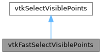

|
Slicer 5.7
Slicer is a multi-platform, free and open source software package for visualization and medical image computing
|
Loading...
Searching...
No Matches
|
Slicer 5.7
Slicer is a multi-platform, free and open source software package for visualization and medical image computing
|
extract points that are visible (based on z-buffer calculation) More...
#include <Modules/Loadable/Markups/VTKWidgets/vtkFastSelectVisiblePoints.h>


Public Types | |
| typedef vtkSelectVisiblePoints | Superclass |
Public Member Functions | |
| virtual const char * | GetClassName () |
| vtkFloatArray * | GetZBuffer () |
| virtual int | IsA (const char *type) |
| void | PrintSelf (ostream &os, vtkIndent indent) override |
| void | ResetZBuffer () |
| void | SetZBuffer (vtkFloatArray *zBuffer) |
| void | UpdateZBuffer () |
Static Public Member Functions | |
| static int | IsTypeOf (const char *type) |
| static vtkFastSelectVisiblePoints * | New () |
| static vtkFastSelectVisiblePoints * | SafeDownCast (vtkObject *o) |
Protected Member Functions | |
| int | RequestData (vtkInformation *, vtkInformationVector **, vtkInformationVector *) override |
| vtkFastSelectVisiblePoints () | |
| ~vtkFastSelectVisiblePoints () override | |
Protected Attributes | |
| vtkSmartPointer< vtkFloatArray > | ZBuffer |
extract points that are visible (based on z-buffer calculation)
vtkFastSelectVisiblePoints is a filter that selects points based on whether they are visible or not. Visibility is determined by accessing the z-buffer of a rendering window. (The position of each input point is converted into display coordinates, and then the z-value at that point is obtained. If within the user-specified tolerance, the point is considered visible.)
Points that are visible (or if the ivar SelectInvisible is on, invisible points) are passed to the output. Associated data attributes are passed to the output as well.
This filter also allows you to specify a rectangular window in display (pixel) coordinates in which the visible points must lie. This can be used as a sort of local "brushing" operation to select just data within a window.
Definition at line 58 of file vtkFastSelectVisiblePoints.h.
| typedef vtkSelectVisiblePoints vtkFastSelectVisiblePoints::Superclass |
Definition at line 61 of file vtkFastSelectVisiblePoints.h.
|
protected |
|
overrideprotected |
|
virtual |
|
inline |
Definition at line 73 of file vtkFastSelectVisiblePoints.h.
|
virtual |
|
static |
|
static |
Instantiate object with no renderer; window selection turned off; tolerance set to 0.01; and select invisible off.
|
override |
|
overrideprotected |
| void vtkFastSelectVisiblePoints::ResetZBuffer | ( | ) |
|
static |
|
inline |
Definition at line 74 of file vtkFastSelectVisiblePoints.h.
| void vtkFastSelectVisiblePoints::UpdateZBuffer | ( | ) |
|
protected |
Definition at line 82 of file vtkFastSelectVisiblePoints.h.